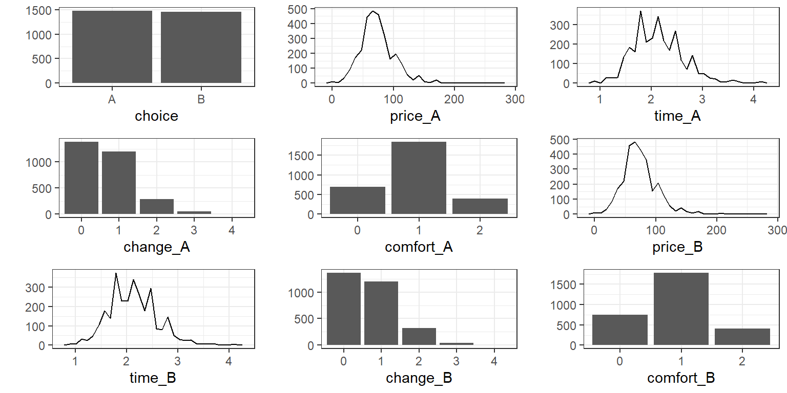
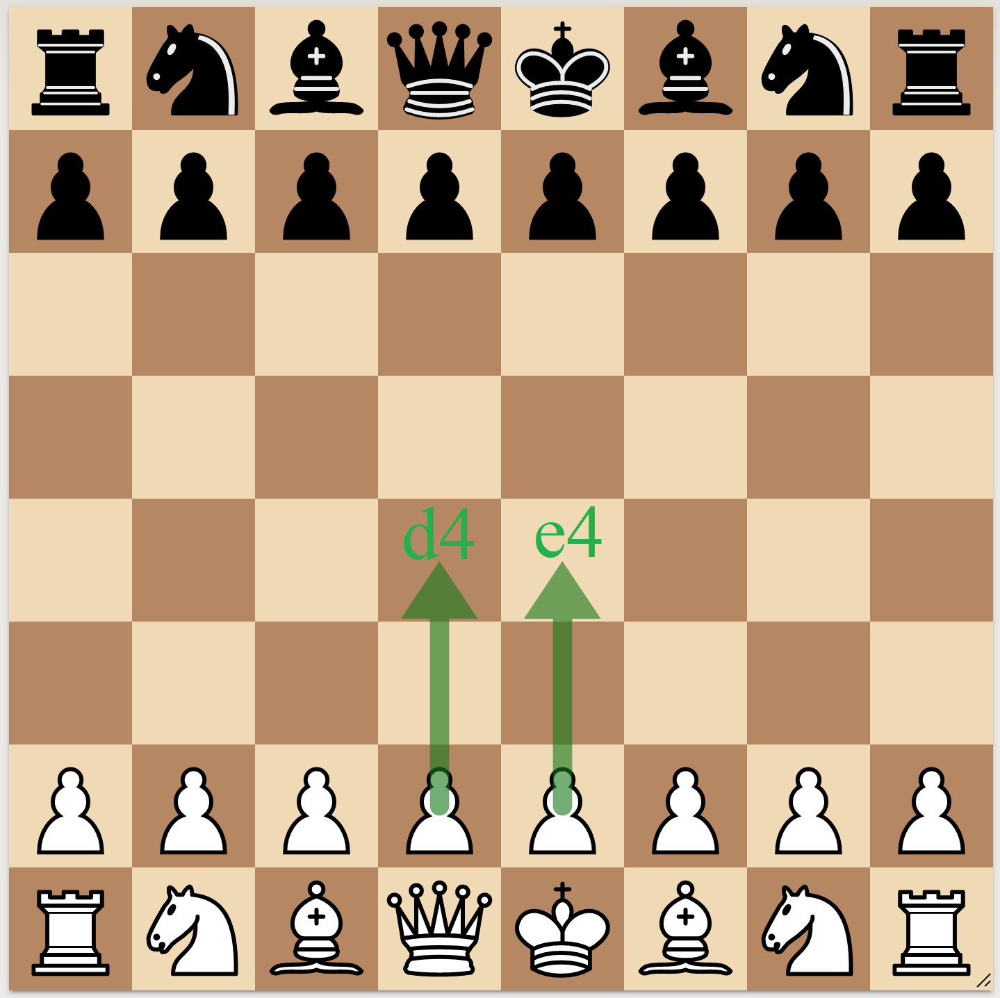
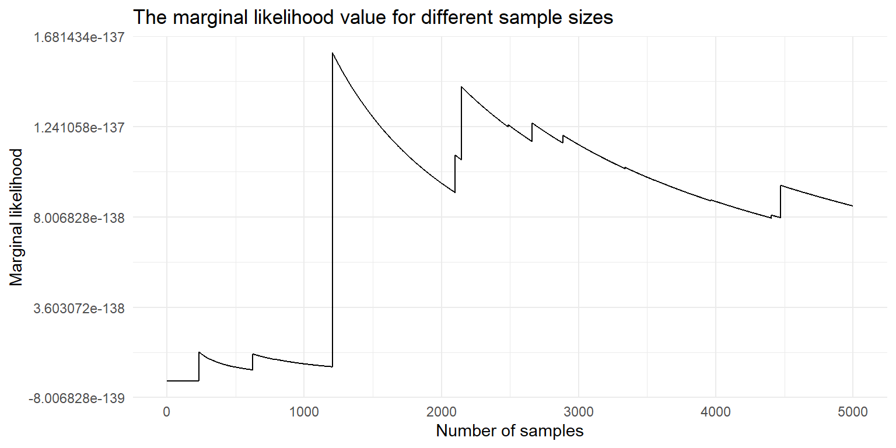
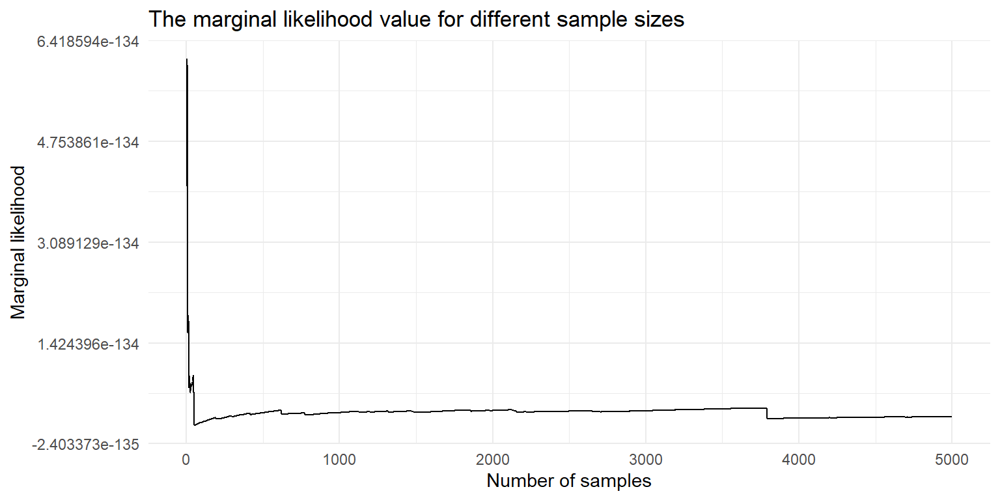
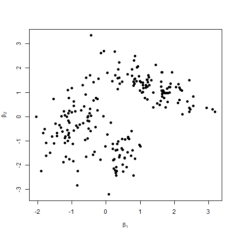
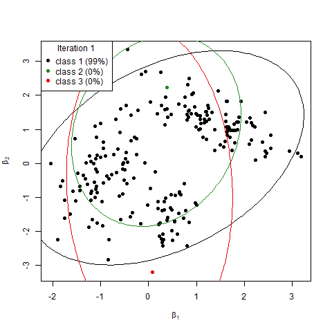
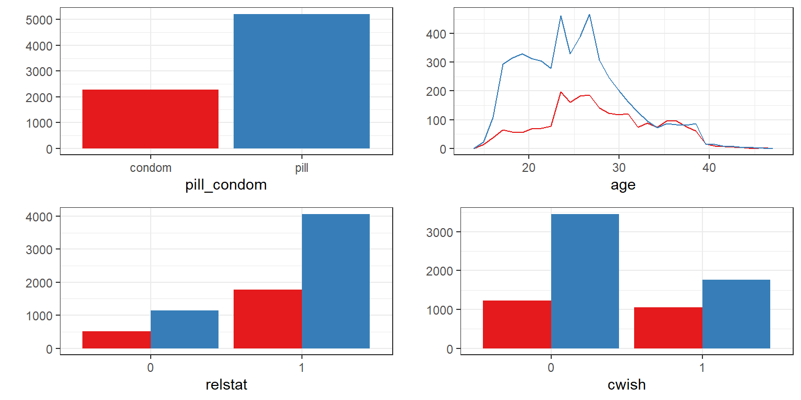
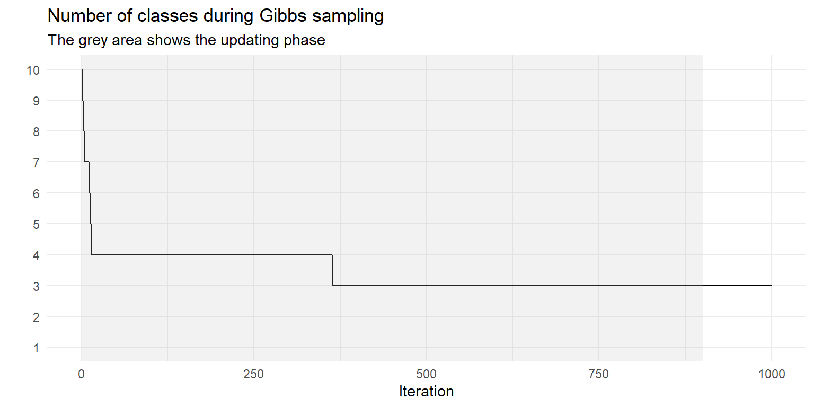
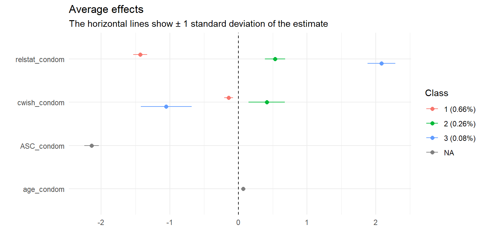

A glimpse into the package
Some applications
Bayesian model selection (WAIC, Bayes factor)
The Dirichlet process for heterogeneous preferences
| A | B | |
|---|---|---|
| price | 80€ | 40€ |
| time | 1h | 2h |
| comfort | 0 (comfortable) | 2 (uncomfortable) |
| changes | 1 | 1 |
The latent utility is a linear combination of the covariates:
\[ \begin{bmatrix} U_A \\ U_B \end{bmatrix} = \begin{bmatrix} \text{price}_A & \text{time}_A & \text{comfort}_A & \text{changes}_A \\ \text{price}_B & \text{time}_B & \text{comfort}_B & \text{changes}_B \end{bmatrix} \begin{bmatrix} \beta_{\text{price}} \\ \beta_{\text{time}} \\ \beta_{\text{comfort}} \\ \beta_{\text{changes}} \end{bmatrix} + \epsilon \]
The error term is jointly normal:
\[ \epsilon \sim \text{MVN}(0, \Sigma) \]
The chosen alternative is linked to the maximal utility:
\[ y = \arg \max U \]
# data(Train, package = "mlogit")
# transformed price to euros and time to hours
form <- choice ~ price + time + change + comfort | 0
data <- prepare_data(form = form, choice_data = Train)
plot(data)
model <- mcmc(data = data,
R = 1000, # the number of Gibbs samples
scale = list("parameter" = "a", index = 1, value = -1),
print_progress = FALSE)
coef(model)## Estimate (sd)
## 1 price -1.00 (0.00)
## 2 time -25.83 (2.19)
## 3 change -4.96 (0.91)
## 4 comfort -14.50 (0.90)## predicted
## true A B
## A 1024 450
## B 439 1016## id idc A B true predicted correct
## 1 1 1 0.9167745 0.08322548 A A TRUE
## 2 1 2 0.6383328 0.36166723 A A TRUE
## 3 1 3 0.7923288 0.20767124 A A TRUE
## 4 1 4 0.1779578 0.82204220 B B TRUE
## 5 1 5 0.5488194 0.45118060 B A FALSE
## 6 1 6 0.1291716 0.87082838 B B TRUE
Opening choice explained by
Intercept only
Intercept + FIDE rating
Intercept + FIDE rating + Age
Intercept + FIDE rating + Age + Sex
## WAIC se(WAIC) pWAIC MML BF:mod0 BF:mod1 BF:mod2 BF:mod3
## mod0 move ~ 0 | 1 621.51 0.02 0.99 1.41e-136 1 6.24 19.94 > 100
## mod1 move ~ 0 | rating 620.03 0.23 2.01 2.25e-137 0.16 1.00 3.20 52.46
## mod2 move ~ 0 | rating + age 620.61 0.26 3.03 7.05e-138 0.05 0.31 1.00 16.42
## mod3 move ~ 0 | rating + age + sex 619.12 0.25 3.70 4.29e-139 < 0.01 0.02 0.06 1\[ \text{WAIC} = -2 ( \text{lppd} - p_\text{WAIC} ),~~ \text{lppd} = \sum_i \log S^{-1} \sum_s \Pr(y_i\mid \theta_s),~~p_\text{WAIC} = \sum_i \mathbb{V}_{\theta} \left[ \log \Pr(y_i\mid \theta_s) \right], \]
where each \(\theta_s\) is a posterior sample
\[ BF(\texttt{mod0},\texttt{mod1}) = \frac{\Pr(\texttt{mod0} \mid \texttt{y})}{\Pr(\texttt{mod1} \mid \texttt{y})} = \frac{\Pr(\texttt{y} \mid \texttt{mod0} ) \cdot \Pr(\texttt{mod1})}{\Pr(\texttt{y} \mid \texttt{mod1})\cdot \Pr(\texttt{mod0})} \]
\[p(\texttt{y}\mid \texttt{mod}) = \mathbb{E}_\text{prior}~ p(\texttt{y}\mid \theta,\texttt{mod}) \approx \frac{1}{S} \sum_s p(\texttt{y}\mid \theta_s,\texttt{mod})\]
\[p(\texttt{y}\mid \texttt{mod}) = \mathbb{E}_\text{posterior}^{-1}~ 1/p(\texttt{y}\mid \theta,\texttt{mod}) \approx \left( \frac{1}{S} \sum_s 1/p(\texttt{y}\mid \theta_s,\texttt{mod}) \right) ^{-1}\]

## [1] 8.535092e-138
## [1] 2.076952e-135Remember the probit model equation
\[U = X \beta + \epsilon.\] Now let
\[ \beta \sim \sum_{c = 1,\dots,C} \text{MVN}(b_c, \Omega_c).\]


data <- prepare_data(
form = pill_condom ~ 0 | age + cwish + relstat,
re = c("cwish", "relstat"),
choice_data = pairfam
)
plot(data, by_choice = TRUE)
model <- mcmc(data,
latent_classes = list("C" = 10, "dp_update" = TRUE),
R = 1000, B = 900,
prior = list("delta" = 0.8)
)
plot(model, type = "class_seq")
